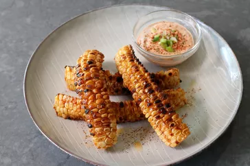

Corn Ribs

Description
This technique for making corn ribs will make you forget everything you know about eating corn on the cob—and will, without a doubt, become your favorite way of making corn.
Ingredients
Spice Mix
- 2 teaspoons kosher salt
- 1 teaspoon chili powder
- 1 teaspoon smoked paprika
- 1/2 teaspoon freshly ground black pepper
- 1/4 teaspoon ground cumin
- 1/4 teaspoon garlic powder
- 1/4 teaspoon onion powder
- 1/8 teaspoon cayenne pepper